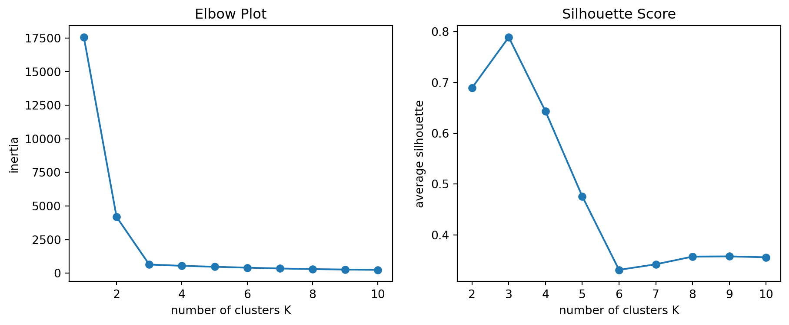
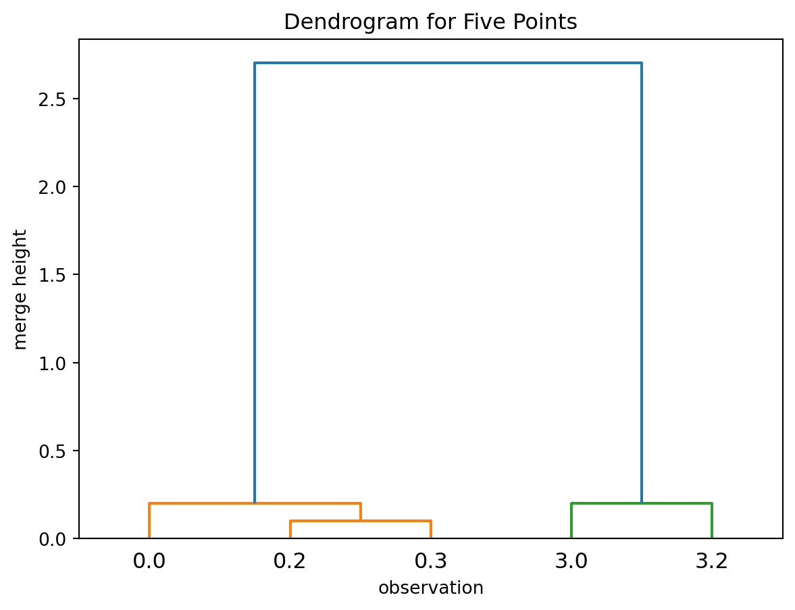
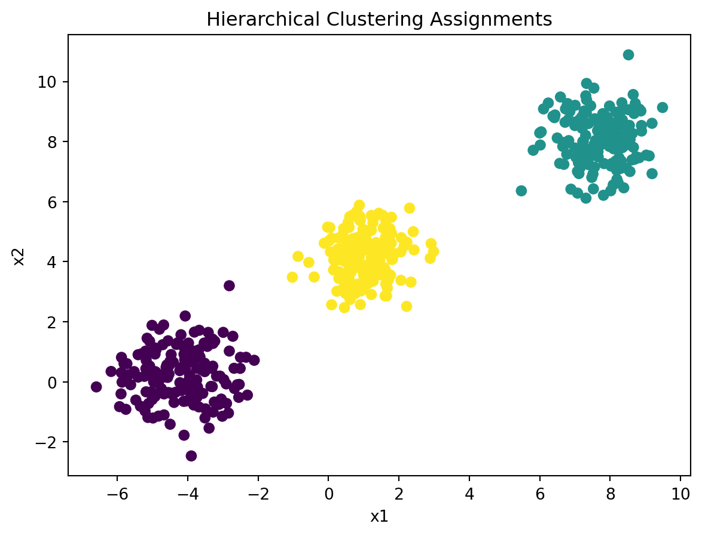
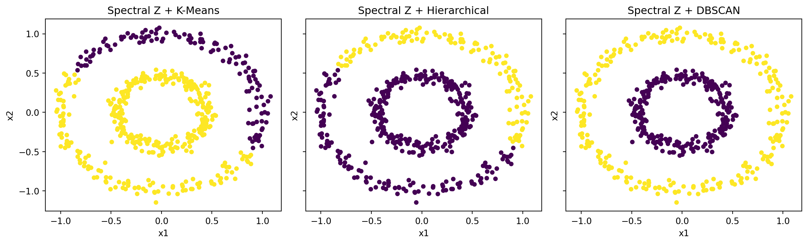

Clustering is an unsupervised learning problem. We observe only a feature matrix \(X\in\mathbb R^{n\times p}\) and seek to partition the observations into groups whose members are similar. Unlike classification, there are no training labels that define the target categories.
Clustering is commonly used to explore latent subpopulations, summarize a large dataset with a small number of groups or prototypes, organize observations for visualization, and generate hypotheses for later scientific analysis.
CautionA cluster is not automatically a real category
A clustering algorithm produces cluster assignments according to its objective and tuning choices. The result may reflect meaningful structure, but it may also reflect feature scaling, outliers, an unsuitable dissimilarity measure, or a forced choice of the number of clusters. Interpretation is part of the analysis.
Clustering methods differ in their definition of a group. We focus on four major paradigms, represented by one typical method from each:
Family
Typical method
What defines a cluster?
Centroid-based
K-means
observations close to the same center
Hierarchical
agglomerative hierarchical clustering
observations joined through a sequence of merges
Density-based
DBSCAN
observations connected through dense regions
Graph-based representation
spectral clustering
observations clustered after a graph-derived transformation
Many other clustering approaches exist. These four paradigms are emphasized because they represent substantially different definitions of what constitutes a cluster. We use one representative algorithm from each paradigm to illustrate the main ideas.
12.1 Distance, Similarity, and Scaling
Most clustering methods begin with a notion of similarity or dissimilarity. For numerical data, this is often derived from a distance measure. The most common choice is Euclidean distance:
The distance defines what the algorithm means by similar. Changing the features, their scales, or the dissimilarity measure changes the clustering problem. In particular, features with larger numerical ranges can dominate distance calculations and therefore have a disproportionate influence on the resulting clusters.
As with KNN and other distance-based methods, it is often advisable to standardize the features before clustering when their scales are not directly comparable.
NoteScaling is a modeling decision
Standardize when numerical scales are arbitrary or incomparable. Do not standardize automatically when the original magnitudes are scientifically meaningful, such as comparable pixel intensities or measurements already expressed on a common scale.
Euclidean distance is not the only choice. Many clustering methods can be combined with alternative notions of similarity or dissimilarity. For example, Manhattan distance can be less sensitive to a few large coordinate differences, cosine similarity focuses on direction rather than magnitude, and domain-specific applications may require custom similarity measures. The choice of similarity measure should reflect the structure one hopes to discover in the data.
12.2 Evaluating a Clustering
Evaluating clustering differs from evaluating supervised learning. In classification or regression, the response variable defines what a correct prediction means, and performance can be measured on held-out labeled data. In clustering, group membership is not observed during fitting. The algorithm produces cluster assignments, but several different assignments may be reasonable for the same dataset depending on the features, scaling, distance, and scientific question.
For this reason, clustering evaluation usually separates two questions:
Are the fitted clusters geometrically coherent in the observed feature space?
If reference labels are available, how well do the cluster assignments agree with those external labels?
Although some evaluation measures are commonly associated with particular clustering methods, the focus here is on the metrics themselves; the corresponding algorithms are discussed in later sections.
12.2.1 WCSS (or Inertia)
Internal clustering metrics use only the observations and their cluster assignments. They can compare values of \(K\), initializations, or methods, but only when the observations, features, scaling, and distance are held fixed. They measure geometric properties of the fitted clustering, not whether the clusters correspond to meaningful external categories.
Two common internal metrics are WCSS and the silhouette value.
The examples below use a small hypothetical dataset to illustrate the mechanics of the evaluation. We first visualize one set of cluster assignments.
The within-cluster sum of squares (WCSS) measures the total squared distance from each observation to the center of its assigned cluster. If \(\mu_k\) is the center of cluster \(C_k\), then
For K-means, WCSS is both the fitting objective and an internal measure of cluster compactness. It plays a role similar to the residual sum of squares (RSS) in regression: smaller values indicate that observations are closer to their fitted centers.
WCSS can be computed for any assignment of observations to clusters. However, it is most naturally associated with K-means because K-means explicitly minimizes WCSS during fitting. For clustering methods designed to detect non-spherical or density-based structures, WCSS may not provide a meaningful assessment of clustering quality.
In sklearn, WCSS is also called inertia and is stored as .inertia_ on a fitted KMeans object.
from sklearn.cluster import KMeanskmeans_eval = KMeans(n_clusters=3, n_init=20, random_state=1)kmeans_eval.fit(X_eval)kmeans_eval.inertia_
0.26666666666666655
Smaller inertia means observations are closer to their assigned centers. However, inertia always decreases as \(K\) increases and becomes zero when every distinct observation is its own cluster. Therefore, its absolute minimum cannot be used to choose \(K\).
12.2.2 Silhouette Value
The Silhouette value is another internal evaluation measure. It evaluates both within-cluster cohesion and separation from nearby clusters. For observation \(i\), define:
\(a(i)\) as its average distance to other observations in its own cluster;
\(b(i)\) as the smallest average distance to observations in another cluster.
values near \(1\) indicate a well-separated observation;
values near \(0\) indicate an observation near a cluster boundary;
negative values suggest that another cluster may be closer.
The overall silhouette score is the average of \(s(i)\) over all observations. Larger values are preferred. It requires at least two nonempty clusters.
from sklearn.metrics import silhouette_scoresilhouette_score(X_eval, cluster_eval)
0.952562475841761
This score is close to 1, indicating that most observations are much closer to observations in their assigned cluster than to observations in other clusters.
12.2.3 Stability
A useful clustering should not change drastically under small, reasonable changes to the analysis. Stability asks whether the same broad grouping appears when the data or fitting procedure is slightly perturbed.
Common checks include rerunning the method with different random seeds, changing tuning parameters slightly, refitting after small changes to preprocessing, or clustering bootstrap or subsampled versions of the data. The numeric cluster labels themselves do not need to match, because labels are arbitrary. What matters is whether similar observations remain grouped together.
Stability is not the same as correctness. A clustering can be stable because a method has a strong geometric bias, even if the resulting groups are not scientifically meaningful. It should therefore be considered together with internal scores, visual inspection when possible, and interpretation in the original features.
12.2.4 Interpretation in the Original Features
Numerical scores do not explain what a cluster represents. After fitting a clustering, the groups should be described using the original variables. For tabular data, a simple interpretation step is to summarize each feature by cluster.
Internal metrics and Rand-index-based agreement measures answer different questions. A useful clustering should be geometrically coherent, reasonably stable, and interpretable for the problem at hand.
12.2.5 Optional: Rand Index
Click to expand.
When reference labels are available, they can be used after clustering for external validation. This setting is common in simulations, benchmark datasets, or applications where external categories are known but intentionally withheld from the clustering algorithm.
External validation does not turn clustering into supervised learning because the reference labels are not used during fitting. Instead, it asks how well the cluster assignments agree with an external reference labeling.
The Rand index compares cluster assignments with reference labels by considering all pairs of observations. A pair is counted as an agreement if the two observations are assigned to the same cluster and have the same reference label, or if they are assigned to different clusters and have different reference labels. The index lies between \(0\) and \(1\), with larger values indicating stronger agreement.
Let \(a\) be the number of observation pairs that are grouped together by both labelings. That is, the two observations have the same cluster assignment and also have the same reference label. Let \(b\) be the number of observation pairs that are separated by both labelings. That is, the two observations have different cluster assignments and also have different reference labels. Since there are \({n \choose 2}\) total pairs, the Rand index is
The diagram below shows where the two labelings agree and disagree. The reference labels define groups \(\{1,2,3\}\), while the clustering algorithm returns cluster labels \(\{0,1,2\}\). The mismatch occurs because reference class 2 is split across clusters 1 and 2, and cluster 2 also contains observations from reference class 3.
The diagram also gives a quick way to compute the four pair counts:
\(a\): pairs together in both labelings. Add \({m\choose 2}\) within each middle observation group: \(a={3\choose 2}+{2\choose 2}+{2\choose 2}+{3\choose 2}=8\).
\(c\): pairs together in the reference labels but separated by the cluster assignments. Reference class 2 is split into groups of sizes 2 and 2, so \(c=2\times 2=4\).
\(d\): pairs separated by the reference labels but together in the cluster assignments. Cluster 2 contains 2 observations from reference class 2 and 3 observations from reference class 3, so \(d=2\times 3=6\).
\(b\): pairs separated by both labelings. The fastest calculation is subtraction from all pairs:
\[
b
=
{10\choose 2}-a-c-d
=
45-8-4-6
=
27.
\]
There are \({10 \choose 2}=45\) observation pairs. Among them, \(a=8\) pairs are grouped together by both labelings, and \(b=27\) pairs are separated by both labelings. Therefore,
The Rand index can be high even when two labelings agree partly by chance, especially when there are many pairs of observations. The adjusted Rand index corrects for this chance agreement.
Example 12.1 (A relatively high Rand index can be misleading) Suppose the reference labels contain two groups of equal size, but the clustering algorithm assigns every observation to its own cluster:
Reference label
1
1
1
1
1
2
2
2
2
2
Cluster assignment
0
1
2
3
4
5
6
7
8
9
This clustering does not recover the two reference groups. However, the Rand index is still above \(0.5\) because many pairs from different reference classes are also placed in different clusters. In this example, \(a=0\) and \(b=25\), so
The adjusted Rand index compares the observed pairwise agreement with the agreement expected from random labelings with similar group sizes. Suppose \(n_{ij}\) is the number of observations that are in reference class \(i\) and cluster \(j\). Let
\(\sum_{ij}{n_{ij}\choose 2}\) is the observed number of pairs that are placed together in both the reference labels and the cluster assignments.
\(\frac{\sum_i {a_i\choose 2}\sum_j {b_j\choose 2}}{{n\choose 2}}\) is the expected number of such agreeing pairs under random labelings with the same class sizes and cluster sizes.
\(\frac{1}{2}\left[\sum_i {a_i\choose 2}+\sum_j {b_j\choose 2}\right]\) is the average of the largest pair counts implied by the two marginal labelings.
The key difference between the Rand index and the adjusted Rand index is that the Rand index measures raw pairwise agreement, while the adjusted Rand index measures pairwise agreement after correcting for chance. This correction matters because many pairs may agree simply because they are separated in both labelings, even when the clustering does not recover the reference groups.
Its interpretation is:
\(1\) means the two labelings are identical, up to relabeling of the clusters;
values near \(0\) mean the agreement is about what would be expected by chance;
negative values are possible when the agreement is worse than expected by chance.
This correction is useful because cluster labels themselves are arbitrary. For example, cluster assignments [0, 0, 1, 1] and [2, 2, 5, 5] describe the same grouping even though the numeric labels are different.
Example 12.2 (A relatively high Rand index can be misleading (cont.)) Continue from the Example 12.1.
The adjusted Rand index is \(0\), correctly indicating that the observed agreement is no greater than what would be expected by chance.
The same score can compare two clustering runs on the same observations. This is useful for assessing whether the fitted clustering is stable under small changes in preprocessing, initialization, or resampling.
This example gives high agreement even though the numeric cluster labels have changed. That is appropriate because the labels identify groups only up to relabeling.
12.3 Centroid-Based: K-Means Clustering
K-means represents each cluster by its center. Let \(C_1,\ldots,C_K\) be a partition of the observations, and let
\[
\mu_k
=
\frac{1}{|C_k|}
\sum_{i\in C_k}x_i
\]
be the center of cluster \(k\).
Definition 12.1 (K-means objective) K-means chooses the partition that minimizes the within-cluster sum of squares (WCSS):
In sklearn, this objective is also called inertia.
The standard algorithm alternates between two steps:
assign each observation to its nearest center;
replace each center by the mean of its assigned observations.
Each step decreases, or leaves unchanged, the K-means objective. The algorithm eventually reaches a local optimum, but not necessarily the global optimum. For this reason, software usually tries several random initializations.
12.3.1 K-means in Python
We use a simulated dataset to illustrate K-means in Python.
We use make_blobs from sklearn.datasets to generate 500 observations from three latent groups. The data have two features so that the result can be visualized directly. The colors below show the generating labels. They are not used when fitting K-means.
KMeans follows the usual sklearn interface. Since clustering is performed on the observed data themselves, we fit the model to the feature matrix and obtain cluster assignments for the observations.
For this first illustration, we set n_clusters=3 so that the fitted result can be compared visually with the simulated groups. This does not represent how \(K\) is chosen in practice. In real applications, the number of clusters is usually unknown and must be treated as a tuning choice.
As mentioned previously, it is recommended to use multiple random initializations to reduce sensitivity to a poor starting configuration. The argument n_init=20 runs K-means from 20 different initial center configurations and retains the solution with the smallest inertia among those runs.
from sklearn.cluster import KMeanskmeans = KMeans(n_clusters=3, n_init=20, random_state=1)kmeans.fit(X)cluster = kmeans.predict(X)
1
You may also use cluster = kmeans.fit_predict(X) to combine the two commands together.
cluster is an array of cluster assignments, one for each observation. We can then plot the observations with colors indicating their assigned clusters.
Cluster labels are arbitrary. A cluster labeled 0 in one fit may be labeled 2 in another fit even when the two clusterings are equivalent. Interpret the groups through their members and feature summaries, not the numeric label.
12.3.2 Tuning Hyperparameters
The most important K-means hyperparameter is n_clusters, the number of centers to fit. A larger value gives a more detailed clustering and lowers the within-cluster sum of squares, but it may split groups that are better interpreted together. A smaller value gives a coarser summary but may merge distinct groups. There is no universally correct criterion because the useful level of grouping depends on the scientific question.
Two common diagnostics for choosing n_clusters are inertia and the silhouette score. The elbow plot examines inertia over a range that includes \(K=1\). The silhouette score compares within-cluster cohesion with separation from neighboring clusters and is computed only for \(K\ge 2\).
from sklearn.metrics import silhouette_scoreinertia_k =range(1, 11)inertias = []for k in inertia_k: model = KMeans(n_clusters=k, n_init=20, random_state=1) model.fit(X) inertias.append(model.inertia_)silhouette_k =range(2, 11)silhouettes = []for k in silhouette_k: model = KMeans(n_clusters=k, n_init=20, random_state=1) labels = model.fit_predict(X) silhouettes.append(silhouette_score(X, labels))
Plot the two diagnostics together.
Code
import matplotlib.pyplot as pltfig, axs = plt.subplots(1, 2, figsize=(11, 4))axs[0].plot(inertia_k, inertias, marker="o")axs[0].set_xlabel("number of clusters K")axs[0].set_ylabel("inertia")axs[0].set_title("Elbow Plot")axs[1].plot(silhouette_k, silhouettes, marker="o")axs[1].set_xlabel("number of clusters K")axs[1].set_ylabel("average silhouette")axs[1].set_title("Silhouette Score");

For inertia, the elbow heuristic looks for the point after which additional clusters produce only modest improvement. In this example, the largest improvements occur for small values of \(K\), and \(K=3\) is a plausible elbow.
For the silhouette score, larger values are preferred. In this example, the average silhouette score is largest at \(K=3\) over the range considered.
The two diagnostics can disagree because they measure different aspects of the cluster assignments. The final choice of \(K\) should be guided by the analysis goal, stability, and interpretability, not by a single plot alone. In this simulated example, the diagnostics are consistent with the illustrative choice \(K=3\).
Other K-means hyperparameters control how the optimization is carried out:
init controls how the initial centers are chosen. The default "k-means++" spreads initial centers out and is usually preferable to purely random initialization.
n_init controls how many initial center configurations are tried. Since K-means can stop at a local optimum, using several starts makes the result less dependent on one unlucky initialization.
max_iter is the maximum number of assignment-update steps for one initialization.
tol controls the convergence tolerance. Smaller values ask the algorithm to keep iterating until the centers change very little.
random_state makes randomized initialization reproducible.
For routine analyses, it is common to use init="k-means++" (which is the default value in the current version of sklearn) and tune n_clusters, while using a reasonably large n_init.
CautionDiagnostics do not define the scientific answer
WCSS and the silhouette score evaluate geometric compactness and separation under the chosen features, scaling, and distance. They do not show that the clusters are stable, scientifically meaningful, or useful for a later decision.
12.3.3 When K-Means Works Well
Because K-means uses squared Euclidean distance to a center, it is most effective when clusters are:
compact and approximately spherical;
separated by their centers;
reasonably similar in size and spread;
not dominated by extreme outliers.
It can perform poorly on curved clusters, clusters with very different densities, or data where a mean is not an appropriate prototype.
K-means divides the feature space into convex regions, so it cannot recover the two rings.
12.4 Hierarchical: Agglomerative Clustering
Hierarchical clustering builds a nested sequence of clusterings. Agglomerative hierarchical clustering begins with each observation in its own cluster and repeatedly merges the two “closest” clusters until all observations belong to one cluster.
The result is a tree called a dendrogram. Unlike K-means, the hierarchy can be fit before choosing the final number of clusters.
12.4.1 Linkage
At each step of agglomerative hierarchical clustering, we merge the two closest clusters. To determine which clusters are closest, we first need to define the distance between clusters. A linkage rule specifies how this distance is computed.
For two clusters \(G\) and \(H\), common linkage rules include:
Single linkage uses the closest pair: \(d_{\text{single}}(G,H)=\min_{i\in G,\;j\in H}d(x_i,x_j).\)
Complete linkage uses the farthest pair: \(d_{\text{complete}}(G,H)=\max_{i\in G,\;j\in H}d(x_i,x_j).\)
Average linkage uses the average pairwise distance: \(d_{\text{avg}}(G,H)=\frac{1}{|G||H|}\sum_{i\in G,j\in H}d(x_i,x_j).\)
Ward linkage merges the pair of clusters that produces the smallest increase in the within-cluster sum of squares (WCSS). Unlike the previous linkage rules, Ward linkage is based on cluster variance rather than pairwise distances, and therefore tends to produce compact, approximately spherical clusters.
Different linkage rules represent different notions of what makes two clusters close. Single linkage can recover elongated or irregularly shaped clusters, but it is sensitive to the chaining effect, where intermediate points connect otherwise separate groups. Complete linkage and Ward linkage are less affected by chaining and tend to produce more compact clusters.
12.4.2 Dendrogram
A dendrogram is a visual record of the sequence of merges. At the beginning, each observation is its own cluster. At each step, the two closest current clusters are merged according to the chosen linkage rule. The height of the merge records the dissimilarity at which the two branches are joined.
The merge height is not always the distance between two individual observations. It is the dissimilarity between the two clusters being merged, as defined by the linkage rule. For single linkage, the height is the smallest pairwise distance between the two clusters. For complete linkage, it is the largest pairwise distance; for average linkage, it is the average pairwise distance; and for Ward linkage, it is based on the increase in within-cluster variation caused by the merge.
For example, consider five one-dimensional observations:
Using single linkage, the tree is built as follows:
Merge \(0.2\) and \(0.3\), the closest pair, at height \(0.1\).
Merge \(0.0\) with the cluster \(\{0.2,0.3\}\) at height \(0.2\).
Merge \(3.0\) and \(3.2\) at height \(0.2\).
Merge the two larger clusters \(\{0.0,0.2,0.3\}\) and \(\{3.0,3.2\}\) at height \(2.7\).

The toy dendrogram shows the main interpretation: observations that merge at low heights are similar under the chosen linkage rule, while branches that merge only at high heights are more separated.
12.4.3 Hierarchical clustering in Python
In sklearn, agglomerative hierarchical clustering is fit using AgglomerativeClustering. Here we apply it to the simulated dataset from K-means. Like other sklearn estimators, it provides fit_predict for returning cluster assignments.
from sklearn.cluster import AgglomerativeClusteringhierarchical_model = AgglomerativeClustering(n_clusters=3, linkage="single")hierarchical_cluster = hierarchical_model.fit_predict(X)
Here n_clusters=3 is chosen for illustration. We can visualize the resulting cluster assignments in the original feature space.
import matplotlib.pyplot as pltplt.scatter(X[:, 0], X[:, 1], c=hierarchical_cluster)plt.xlabel("x1")plt.ylabel("x2")plt.title("Hierarchical Clustering Assignments");

sklearn can fit an agglomerative hierarchical clustering model and return the cluster assignments, but it does not provide a function to directly plot a dendrogram. For visualization, we use linkage from scipy.cluster.hierarchy to compute the hierarchy and dendrogram to display the resulting merge tree.
The merge height records the dissimilarity at which two clusters are merged. Drawing a horizontal line across the dendrogram determines the final clustering: each connected component below the line forms one cluster.
The dendrogram summarizes the fitted hierarchy, not uncertainty about the hierarchy. A large vertical gap often suggests a natural place to cut the tree because the corresponding merge occurs at a much larger dissimilarity than previous merges. However, this is only a heuristic and may be supplemented by validation measures such as the silhouette score or by domain knowledge.
NoteChoosing the Number of Clusters
Hierarchical clustering separates fitting the hierarchy from choosing the final flat clustering. One common approach is to inspect the dendrogram and make a horizontal cut at a merge height. This keeps merges below the cut and separates branches that would only merge above the cut. Equivalently, cutting the tree at a chosen height turns the hierarchy into a flat set of cluster assignments.
Another approach is to choose n_clusters directly, as in K-means, by comparing different scores across different possible choices of n_clusters.
12.4.4 Comparing Linkages
To make the effect of linkage visible, we use a dataset whose geometry is not compact or spherical. The two-moons data have two curved groups, so different linkage rules can produce noticeably different flat clusterings.
Although the data are generated from two underlying groups, we set n_clusters=4 here to make the behavior of the linkage rules easier to compare.
The cluster labels are arbitrary, so the important feature is the shape of the split:
Single linkage uses the closest pair of observations between two clusters. It favors connected shapes and can follow long curves. In the plot, it keeps most of each moon as a connected chain, and the extra clusters appear where a small gap breaks the chain.
Complete linkage uses the farthest pair of observations between two clusters. It favors clusters with small diameter, so it tends to produce compact, ball-like groups rather than long or stretched groups. In the plot, it cuts the moons into shorter pieces instead of preserving the full curved shapes.
Average linkage uses the average distance over all pairs of observations between two clusters. It is a compromise between connectivity and compactness: it is less sensitive to one nearby pair than single linkage, but less strict about the farthest pair than complete linkage. In the plot, it still splits the moons where the average distance to the rest of the arc becomes large.
Ward linkage merges clusters that cause the smallest increase in WCSS. It favors compact, variance-minimizing clusters, similar in spirit to K-means. In the plot, its cuts look like local spatial blocks rather than moon-shaped pieces, because the curved groups are not compact around a single center.
NoteComplete linkage and Ward linkage
Complete linkage and Ward linkage both tend to produce compact, ball-like clusters, but they measure compactness differently.
Complete linkage is based on cluster diameter. It avoids merges that would make the farthest two observations in a cluster too far apart.
Ward linkage is based on within-cluster variation. It avoids merges that would cause a large increase in WCSS, where each cluster is summarized by its mean.
Thus, complete linkage is diameter-based compactness, while Ward linkage is variance-based compactness.
They can differ when cluster sizes or shapes are uneven. Complete linkage reacts strongly to the most distant pair of observations, so one outlying point can prevent a merge by making the cluster diameter too large. Ward linkage reacts to the overall increase in WCSS, so it also depends on cluster sizes and centroids. If two large clusters have nearby centers, Ward linkage may still merge them even when a few observations are relatively far apart, because those observations may not dominate the total WCSS increase.
12.4.5 When Hierarchical Clustering Works Well
Hierarchical clustering is especially useful when the nested structure itself is meaningful. For example, it is often used to organize genes, documents, products, or other observations where relationships at multiple levels of granularity are informative.
It is most useful when:
the hierarchy itself is part of the interpretation;
one wants to inspect several possible numbers of clusters from the same fitted tree;
the dataset is small or moderate in size;
the chosen linkage rule matches the geometry of the groups.
However, agglomerative clustering can be computationally expensive for very large datasets, and early merges cannot be undone. A suboptimal early merge can affect the rest of the tree.
12.5 Density-Based: DBSCAN
Density-based spatial clustering of applications with noise (DBSCAN) defines clusters as connected regions of sufficiently high local density. Unlike K-means, hierarchical clustering, or spectral clustering (that will be discussed later), DBSCAN does not require the number of clusters to be specified in advance.
The main idea is that a cluster should be a dense region separated from other dense regions by lower-density space. This makes DBSCAN useful when clusters are curved, irregularly shaped, or when some observations should be treated as noise rather than forced into a cluster.
DBSCAN uses two main parameters:
eps: the radius of a local neighborhood;
min_samples: the number of observations required for a dense neighborhood, including the observation itself.
These parameters define three types of observations:
A core point has at least min_samples observations in its eps neighborhood, including itself.
A border point is not a core point, but lies within the eps neighborhood of a core point.
A noise point is neither a core point nor a border point.
12.5.1 How DBSCAN Forms Clusters
DBSCAN begins by checking the eps neighborhood of each observation. If an observation has at least min_samples observations in that neighborhood, counting itself, it becomes a core point. A core point can start a new cluster if it has not already been reached from another core point.
Once a core point starts a cluster, DBSCAN adds all observations within its eps neighborhood. If any of those observations are also core points, their own eps neighborhoods are added as well. This expansion continues until no new core points can be reached. All core points connected in this way belong to the same cluster, and non-core points reached from those core points are included as border points.
Observations that are not reachable from any core point are labeled as noise. Thus, DBSCAN does not assign points by nearest center. It forms clusters by following chains of dense neighborhoods, and the number of clusters is whatever number of separated dense regions the algorithm finds.
12.5.2 DBSCAN in Python
We use DBSCAN from sklearn.cluster to implement the method.
In sklearn, noise observations receive the label -1. As with all clustering labels, the nonnegative cluster labels have no ordinal meaning.
12.5.3 Choosing eps and min_samples
The most important DBSCAN hyperparameter is eps, because it controls the scale at which density is measured. A smaller eps makes neighborhoods smaller and the density requirement stricter. This may split clusters or label more observations as noise. A larger eps makes neighborhoods larger and can merge groups through low-density bridges.
The parameter min_samples controls how much local support is required for a point to be considered a core point. Larger values make the method more conservative and usually produce more noise points.
A practical workflow is to first set min_samples, then use the data to select eps. A common starting choice is to set min_samples to about twice the number of features. In this two-dimensional example, we use 4.
After choosing min_samples, compute the distance from each observation to the neighbor that determines whether it is a core point. Since min_samples includes the observation itself in sklearn, this is the distance to the min_samples-th nearest observation when the observation itself is included as the first neighbor. Points inside dense regions should have small such distances, while isolated or low-density points should have larger distances. Sorting these distances gives a diagnostic plot. A visible elbow in the plot suggests a candidate value of eps.
In Python we can use NearestNeighbors from sklearn.neighbors to compute these distances. The result is then sorted and plotted.
from sklearn.neighbors import NearestNeighborsmin_samples =4neighbors = NearestNeighbors(n_neighbors=min_samples)neighbors.fit(X_circle)distances, indices = neighbors.kneighbors(X_circle)k_distances = np.sort(distances[:, -1])plt.plot(k_distances)plt.axhline(y=0.13, ls="--")plt.xlabel("sorted observation index")plt.ylabel(f"distance to {min_samples}-th nearest neighbor")plt.title("K-Distance Plot for Choosing eps");
A candidate eps can be drawn as a horizontal line on this plot. Observations with k-distances below the line satisfy the core-point density requirement. Observations above the line are not core points; they may later become border points if they lie within eps of a core point, or they may be labeled as noise.
Thus, decreasing eps usually creates fewer core points, more noise, and a greater chance that a dense region is split into pieces. Increasing eps usually creates more core points and a greater chance that nearby dense regions are merged through a bridge of points.
In this example, the curve remains relatively flat for most observations and then increases more sharply for observations whose local neighborhoods are sparser. An eps value near the bend separates the dense ring structure from the lower-density gaps. We next check nearby values.
If small changes in eps lead to very different cluster assignments, the density structure may not be stable at a single scale. In that case, the fitted clusters should be interpreted cautiously, or a method designed for varying density levels may be more appropriate.
In this example, from 0.12 to 0.14 the clustering structure is relatively stable. The color labels may change because cluster labels are arbitrary, but the two-ring grouping is essentially the same. Therefore, 0.13 is a reasonable choice within this stable range.
CautionSilhouette scores are only a rough diagnostic for DBSCAN
One can compute silhouette scores over a grid of eps and min_samples values, but this is not ordinary cross-validation because clustering has no supervised prediction error. The score is also harder to interpret for DBSCAN: treating noise as an extra cluster can distort the score, while removing noise ignores one of DBSCAN’s main outputs.
Silhouette scores also favor compact, well-separated groups, whereas DBSCAN is often used for curved or irregular clusters. Use them only as a secondary diagnostic alongside the k-distance plot, the number of clusters, the fraction of noise points, visual inspection when possible, and sensitivity to nearby parameter values.
NoteDBSCAN does not tune n_clusters
DBSCAN determines the number of clusters from the density structure induced by eps and min_samples. This is useful when the number of groups is unknown, but it also means that the result can change substantially when the density scale changes.
12.5.4 When DBSCAN Works Well
DBSCAN is most useful when:
clusters have irregular or curved shapes;
clusters are separated by sparse regions;
noise points should be explicitly identified;
a single density scale is reasonable for the dataset.
It is less effective when cluster densities differ substantially. One global value of eps may be too small for a sparse cluster and too large for a dense cluster.
12.6 Graph-Based: Spectral Clustering
The previous methods define clusters directly from centers, merges, or density in the observed feature space. Spectral clustering is different: its core step is to build a new graph-based representation of the data. A clustering method is then applied to that new representation:
\[
X
\longrightarrow
\text{graph-based representation } Z
\longrightarrow
\text{clustering in } Z.
\]
The final clustering is still a partition of the original observations, but the partition is found after transforming the data into coordinates that reflect graph connectivity. The last step is often K-means, but in principle the new representation can be passed to K-means, hierarchical clustering, DBSCAN, or any other clustering method.
12.6.1 Building a Graph Representation
Spectral clustering treats observations as vertices in a graph. Two observations are connected when they are sufficiently similar, for example when one is among the nearest neighbors of the other. The graph represents local connectivity: observations are close if they can be connected through short graph paths, not only if they are close to the same center.
Let \(W=\mqty[W_{ij}]\) be the weighted adjacency matrix and define the degree matrix
This quantity is small when strongly connected observations receive similar values. Therefore, eigenvectors of the Laplacian with small eigenvalues provide coordinates that vary slowly across strong graph edges. These eigenvectors form the new representation used for clustering.
12.6.2 A Four-Point Example
Suppose four observations form two disconnected graph components: observation 1 is connected to observation 2, and observation 3 is connected to observation 4.
graph LR
x1["1"] --- x2["2"]
x3["3"] --- x4["4"]
With edge weight 1, the weighted adjacency matrix is
Thus, both are eigenvectors with eigenvalue 0. They are constant within each connected component: \(v_1\) identifies the component containing observations 1 and 2, while \(v_2\) identifies the component containing observations 3 and 4.
If we use these two eigenvectors as the columns of a new representation matrix \(Z\), then each row of \(Z\) is the new feature vector for one observation:
Observation
Coordinate from \(v_1\)
Coordinate from \(v_2\)
1
1
0
2
1
0
3
0
1
4
0
1
In the original data, these four observations may not be easy to separate by a linear boundary or by distance to a center. In the graph-based representation, observations 1 and 2 now have identical coordinates \((1,0)\), while observations 3 and 4 have identical coordinates \((0,1)\). The new feature vector records graph membership: observations connected through the graph receive similar coordinates.
This example is idealized because the graph is exactly disconnected. In real datasets, the graph is usually connected but may have weak connections between groups. The small-eigenvalue eigenvectors then give approximate component coordinates: they change slowly within dense or well-connected regions and more sharply across weak connections.
Many implementations use normalized versions of the graph Laplacian instead of \(L=D-W\). The details differ, but the purpose is the same: construct coordinates that summarize graph connectivity.
12.6.3 How Spectral Clustering Forms Clusters
A typical spectral clustering workflow is:
construct a similarity or nearest-neighbor graph;
compute eigenvectors of a graph Laplacian;
store those eigenvectors as a new feature matrix \(Z\);
apply a clustering method to \(Z\).
The clustering method in the last step is not the essence of spectral clustering. The essential step is the new representation \(Z\). K-means is common because the spectral embedding often turns graph-connected groups into compact groups, but other clustering methods can also be applied to the embedded points.
12.6.4 Spectral Clustering in Python
The concentric circles cannot be separated by placing two centers in the original plane. Their neighborhood graph, however, encodes connectivity around each ring.
In sklearn, SpectralClustering combines the representation step and the final clustering step. With assign_labels="kmeans", it computes a spectral embedding internally and then applies K-means to that embedding. This is the default assignment method.
Spectral clustering recovers the rings because the graph representation captures connectivity along each ring. It does not draw circular boundaries or search for circular cluster centers in the original plane. Instead, it builds a representation in which the two graph-connected rings are easier to separate.
12.6.5 Exporting the Representation
The spectral representation can also be computed directly and then passed to a different clustering method. In sklearn, SpectralEmbedding returns the new coordinates.
Here Z_circle is the graph-based feature matrix. Each row is a new vector for one original observation. The hierarchical clustering step above is not operating on the original coordinates X_circle; it is operating on the spectral coordinates Z_circle.
The most important spectral clustering choices are how to build the graph and, when using a final method such as K-means or hierarchical clustering, how many clusters to return.
n_clusters specifies the number of final clusters, similar to K-means.
affinity controls how the similarity graph is constructed. The example above uses "nearest_neighbors".
n_neighbors controls the graph scale when affinity="nearest_neighbors". A smaller value gives a more local graph and may disconnect a meaningful group. A larger value gives a denser graph and may create shortcuts between groups.
assign_labels controls how points are assigned to clusters after the spectral embedding is computed by SpectralClustering. The common choice "kmeans" applies K-means in the new coordinates.
For a nearest-neighbor graph, n_neighbors plays a role similar to a scale parameter. It is useful to compare several values.
If the graph is too sparse, a true group may break into disconnected pieces. If the graph is too dense, edges may create shortcuts between groups that should remain separated.
CautionGraph construction is part of the model
The distance metric, number of neighbors, affinity function, and number of clusters can all change the result. Spectral clustering should therefore be checked for sensitivity to reasonable graph-construction choices.
NoteGraphs are not dendrograms
The graph in spectral clustering and the tree in hierarchical clustering encode different information. A hierarchical dendrogram records a sequence of merges. Cutting the tree at a height gives a flat clustering, and the merge heights show the dissimilarity levels at which groups were joined.
The graph in spectral clustering is not a merge history. It records local similarities between observations, and the graph Laplacian uses those connections to build new coordinates. A clustering method is then applied to those new coordinates. Thus, hierarchical clustering groups observations by following a merge tree, while spectral clustering first transforms a similarity graph into a new representation.
12.6.7 When Spectral Clustering Works Well
Spectral clustering is most useful when:
a graph-derived representation makes the groups easier to separate;
groups are non-convex, such as rings or moons;
a meaningful similarity or neighborhood graph can be constructed;
the dataset is small or moderate in size.
It is less useful when the graph construction is unclear or unstable. Unlike DBSCAN, spectral clustering does not label noise explicitly and usually requires the number of clusters to be chosen in advance.
12.7 Comparing the Four Methods
The four methods answer different versions of the clustering question:
Property
K-means
Hierarchical
DBSCAN
Spectral
Main idea
nearest centroid
repeated merges
density connectivity
graph-derived representation
Number of clusters required?
yes
chosen by cutting the tree
no
depends on final method
Typical cluster shape
compact and convex
depends on linkage
irregular shapes allowed
depends on graph representation and final clustering method
Explicit noise label?
no
no
yes
depends on final method
Main tuning choices
\(K\), initialization
distance, linkage, tree cut
eps, min_samples
graph construction, final clustering method, often \(K\)
Main output
cluster assignments and centers
dendrogram
clusters and noise points
spectral representation plus cluster assignments
No method is uniformly best. The geometry of the data, the intended definition of a cluster, and the scientific question should determine which paradigm is appropriate. A useful comparison does not require every method to look successful; a poor-looking fit can be informative when it reveals the method’s assumptions.
12.7.1 Direct Clustering Methods
K-means, hierarchical clustering, and DBSCAN are direct clustering methods: they cluster the original feature matrix using different definitions of a group. Their strengths show up in different data geometries.
K-means is natural when groups are compact and well summarized by centers. Hierarchical clustering is useful when the merge structure itself is part of the interpretation, or when one wants to inspect several possible resolutions from the same fitted hierarchy. DBSCAN is useful when clusters are dense, possibly curved regions and sparse observations should be allowed to remain noise.
These examples are not a ranking. They show that each method is answering a different question: nearest center, merge tree, or density connectivity. When a method performs poorly on a particular geometry, the failure is still useful if it matches the method’s definition of a cluster.
12.7.2 Spectral Representation with Different Final Methods
Spectral clustering changes the comparison. It first constructs a graph-derived representation \(Z\), and then a final clustering method is applied to \(Z\). The same representation can be paired with different final methods.
fig, axs = plt.subplots(1, 3, figsize=(13, 4), sharex=True, sharey=True)for ax, labels, title inzip( axs, [ spectral_then_kmeans, spectral_then_hier, spectral_then_dbscan, ], ["Spectral Z + K-Means","Spectral Z + Hierarchical","Spectral Z + DBSCAN", ],): ax.scatter(X_circle[:, 0], X_circle[:, 1], c=labels, s=18) ax.set_title(title) ax.set_xlabel("x1") ax.set_ylabel("x2")plt.tight_layout();

K-means on \(Z\) is the standard spectral clustering pipeline in many software implementations, including sklearn.SpectralClustering with assign_labels="kmeans". Hierarchical clustering on \(Z\) is useful when the spectral representation separates the broad groups but one still wants a merge tree or several possible resolutions. DBSCAN on \(Z\) is useful when the representation contains compact dense regions plus possible sparse points, so a noise label remains useful after the transformation.
Thus, spectral clustering should not be interpreted as just another final assignment rule. Its main contribution is the representation \(Z\); the final clustering method should be chosen according to what structure remains in that representation. A final method may still behave poorly on \(Z\), but that can be diagnostic: it shows which structure the representation preserved and which assumptions the final clustering method added.
12.8 Practical Workflow
A clustering analysis usually follows these steps:
select features that match the scientific question;
handle missing values and obvious data quality problems;
choose scaling and a distance metric deliberately;
decide whether clustering should use the original features or a constructed representation;
compare clustering paradigms and tuning choices;
check stability under perturbations;
interpret the cluster assignments in the original feature space.
Spectral clustering already demonstrated that changing the representation can make some structures easier to separate. The next chapter, Chapter 13, studies this representation problem directly through linear dimension reduction. The following chapter, Chapter 14, develops nonlinear representations primarily for visualization. These transformations can reveal structure and reduce noise, but they also change the geometry on which clustering is based.
12.9 Summary
The four paradigms use different definitions of a cluster. K-means finds centroid-based groups, hierarchical clustering builds a nested sequence of merges, DBSCAN finds density-connected groups while allowing noise, and spectral clustering constructs a graph-derived representation before applying a final clustering method. Method choice and evaluation should reflect the intended geometry, stability, and interpretation in the original variables.